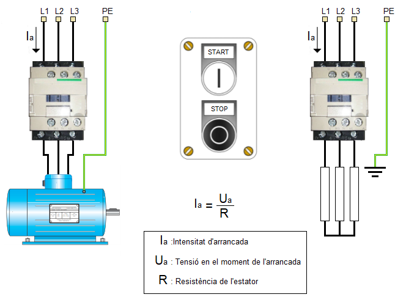
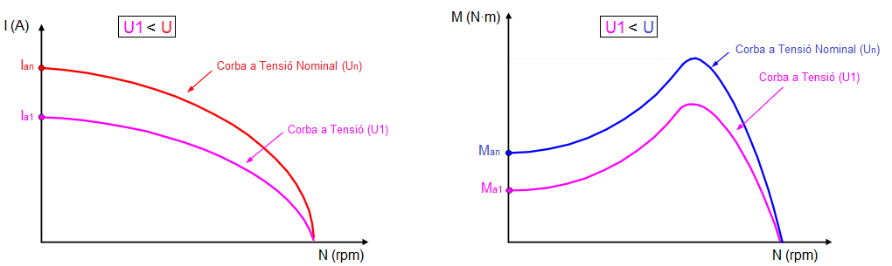
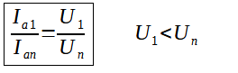
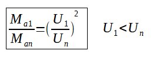
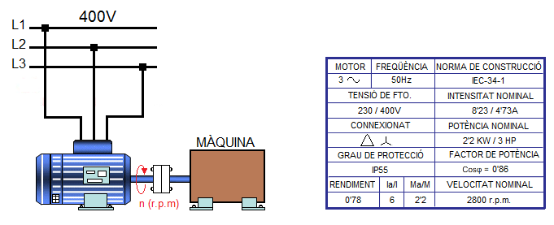
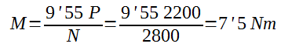
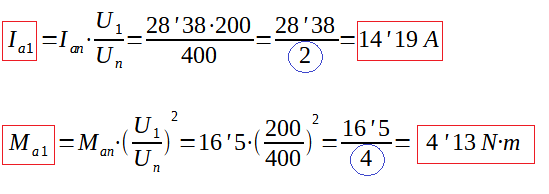

Sistemes d'arrancada per disminució de la tensió de l'estator
El primer que farem és simplificar el circuit elèctric de l'estator d'un motor d'inducció substituint els bobinats per tres resistència iguals (Veure figura):

Segons la llei d'Ohm la intensitat en el moment de l'arrancada (Ia) depen de dos paràmetres:
- del valor de la tensió en el moment de l'arrancada (Ua)
- del valor de la resistència de l'estator
En un motor d'inducció de gàbia d'esquirol no es pot accedir al seu interior i per tant no es pot modificar la seua resistència. Aleshores. l'únic paràmetre que es pot modificar és el valor de la tensió en el moment de l'arrancada. Segons la llei d'Ohm si es disminueix el valor de la tensió en el moment de l'arrancada també ho farà la intensitat d'arrancada (Veure Gràfica esquerra). Ara bé, en disminuir la tensió d'alimentació del motor elèctric durant l'arrancada del motor es produeix un efecte no desitjat en el parell d'arrancada (Ma): el parell d'arrancada disminueix quan disminueix la tensió d'arrancada (Veure gràfica dreta).

Les expressions matemàtiques que relacionen la intensitat d'arrancada (Ia), el parell d'arrancada (Ma) i la tensió d'arrancada (Ua) són les següents:
Intensitat d'arrancada (Ia)

- Un: Tensió Nominal
- U1: Tensió inferior a la nominal
- Ian: Valor del corrent d'arrancada amb la tensió nominal Un
- Ia1: Valor del corrent d'arrancada amb la tensió U1
| La disminució que es produeix amb el corrent d'arrancada és directament proporcional a la disminució de la tensió d'arrancada. |
Parell d'arrancada (Ma)

- Un: Tensió Nominal
- U1: Tensió inferior a la nominal
- Man: Valor del parell d'arrancada amb la tensió nominal Un
- Ma1: Valor del parell d'arrancada amb la tensió U1
| La disminució que es produeix amb el parell d'arrancada es directament proporcional a la disminució quadràtica del valor de la tensió. |
Activitat

Calcular:
- Parell Nominal (Mn)
- Corrent d'arrancada (Ian)
- Parell d'arrancada (Man)
Si en el moment de l'arrancada reduïm la tensió a U1=200V, calcular en aquestes noves condicions:
- Corrent d'arrancada (Ia1)
- Parell d'arrancada (Ma1)
En primer lloc calcularem el parell nominal del motor:

Segons la placa de característiques: (Ian/In)=6 i (Man/Mn)=2'2
El motor está connexionat en triàngle (400V) i per tan el consum de corrent és: In=4'73A
- Man=2'2·Mn=2'2·7'5= 16'5 Nm
- Ian=6·In=6·4'73=28'38 A
Si reduïm la tensió a U1=200V el parell d'arrancada Ma1 i el corrent d'arrancada Ia1 disminuiran en la següent proporció:

Llicenciat sota la Llicència Creative Commons Reconeixement CompartirIgual 4.0